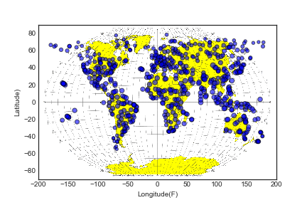
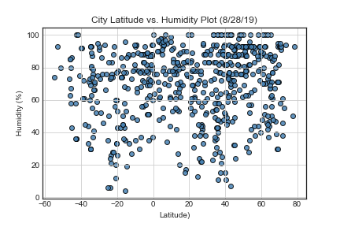
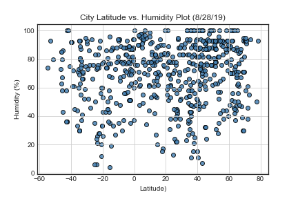

Latitude Vs Weather
Weather Of The World

This is a weather evaluation of 600 random cities spread across the globe. On the same day several weather attributes were recorded per city: Temperature, Humidity, Cloudiness, and Wind Speed.
A high level analysis was peformed to determine how these weather attributes were different in the equatorial zone (from roughly 23 degrees Lattitude to -23 degrees Latitude) compared to the rest of the globe. [This data was recorded on 8/29/2019.]
Visualizations
 

Above is a snap shot of the visualizations of this data. To view larger charts, please click on the navigation bar above and select plots, and chart type.